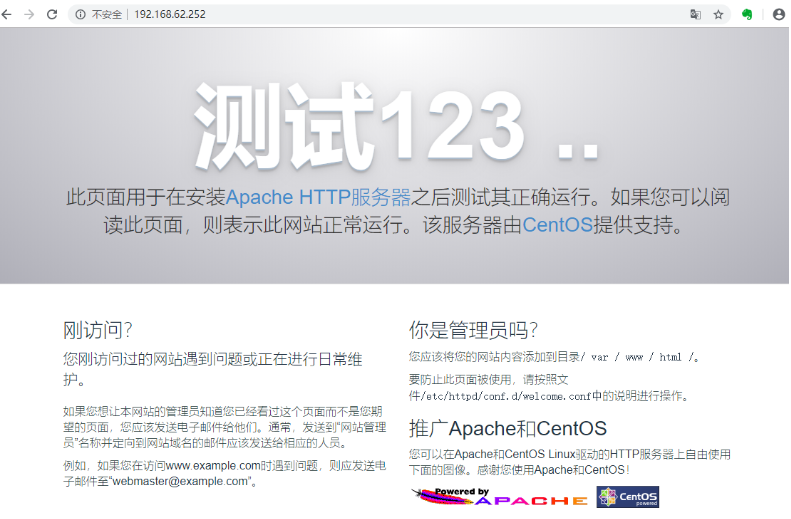
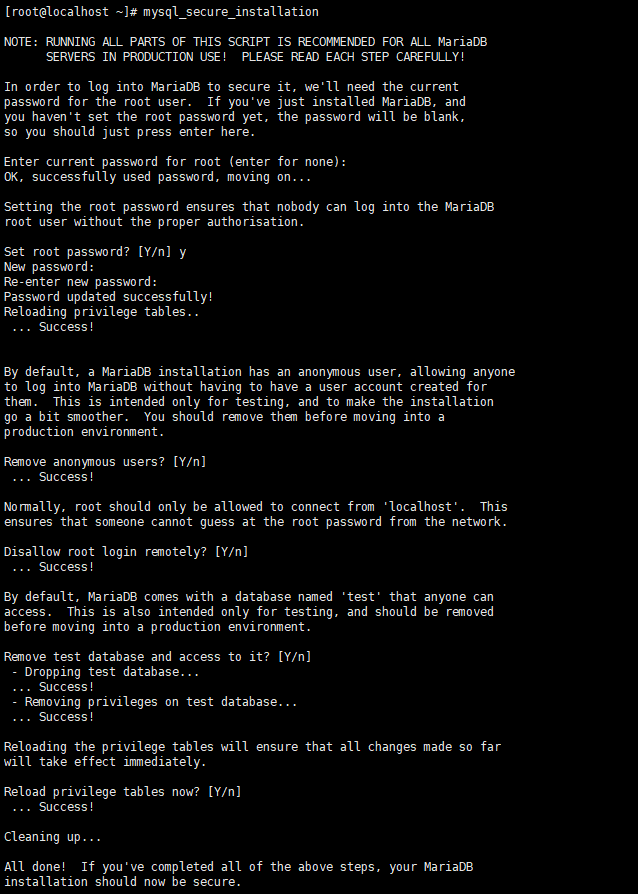
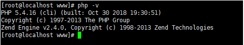
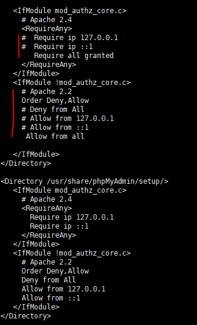
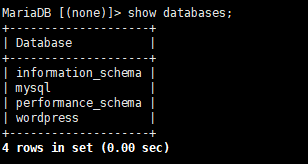
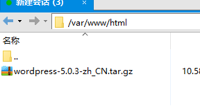
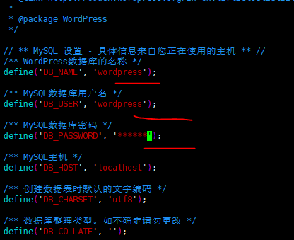

在 Linux 系统中搭建个人博客
防火墙
systemctl status firewalld 查看状态
systemctl disable firewalld 禁用防火墙
firewall-cmd --zone=public --add-port=80/tcp --permanent （--permanent否则重启后失效）
firewall-cmd --reload 重新载入
Apache
yum install httpd 安装
systemctl start/stop/restart httpd 开启/关闭/重启服务
systemctl enable/disable httpd 开启/关闭开机自启动
systemctl status httpd 检查服务状态

MariaDB
yum -y install mariadb mariadb-server 安装 -y默认yes
systemctl start mariadb
systemctl enable mariadb
mysql_secure_installation 基础配置
首先是设置密码，会提示先输入密码
Enter current password for root (enter for none):<–初次运行直接回车
Set root password? [Y/n] <– 是否设置root用户密码，输入y并回车或直接回车
New password: <– 设置root用户的密码
Re-enter new password: <– 再输入一次你设置的密码
其他配置
Remove anonymous users? [Y/n] <– 是否删除匿名用户，回车
Disallow root login remotely? [Y/n] <–是否禁止root远程登录,回车,
Remove test database and access to it? [Y/n] <– 是否删除test数据库，回车
Reload privilege tables now? [Y/n] <– 是否重新加载权限表，回车

初始化MariaDB完成，接下来测试登录
mysql -u root -p
php
yum install php php-mysql

phpMyAdmin
yum install epel-release 先安装epel，不然安装pgpmyadmin时会出现找不到包。
rpm -ivh http://rpms.famillecollet.com/enterprise/remi-release-7.rpm
sudo yum install phpMyAdmin
vi /etc/httpd/conf.d/phpMyAdmin.conf 配置

wordpress
mysql -u root -p 登录
create database wordpress; 创建数据库（名）
create user wordpress@localhost identified by '******'; 创建数据库用户名密码
grant all privileges on wordpress.* to wordpress@localhost identified by '******';
设置用户wordpress访问wordpress数据库权限
flush privileges; 刷新设置
exit 退出

下载wordpress xftp发送到 /var/www/html目录 解压

tar xzvf wordpress-5.0.3-zh_CN.tar.gz 解压
cd wordpress
cp wp-config-sample.php wp-config.php 备份复制
vim wp-config.php 配置

http://ip/wordpress/wp-admin/install.php 登录